Időtálló faépítmények kompromisszumok nélkül
Prémium pergolák, teraszfedések és kocsibeállók egyedi tervezéssel és teljes körű kivitelezéssel Győr–Moson–Sopron vármegyében.
Nem barkács. Nem sablon. Valódi, statikailag átgondolt szerkezetek, amelyek hosszú távon is értéket képviselnek.
Minden, ami fa! Vagy jót vagy semmit!
Van egy nagyszerű ötlete, amit szeretne megvalósítani? Mi segítünk Önnek!
Cégünk kertépítmények készítésével foglalkozik rövid határidővel és pontos munkavégzéssel. Egyedi méretben és kivitelben kínáljuk szolgáltatásainkat, hogy az Ön elképzelései maradéktalanul megvalósulhassanak.
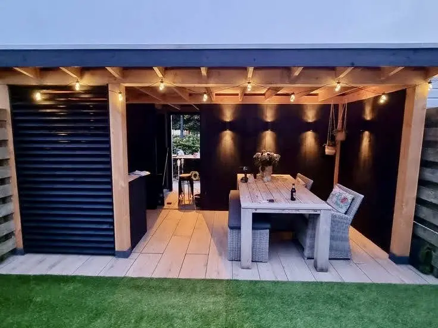
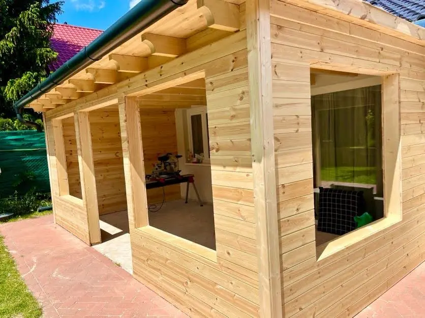
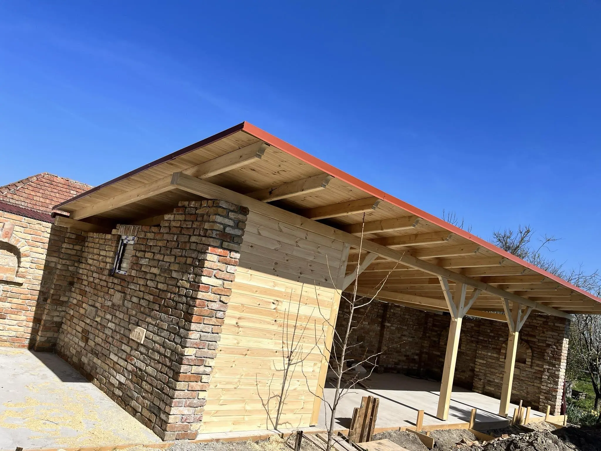
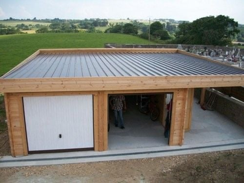
Állami támogatás
2025 -ben a Magyar Államkincstárnál már igényelhető a Vidéki Otthonfelújítási Program keretéből a legfeljebb 3 milliós vissza nem térítendő állami támogatás! Többek között felhasználható terasz , pergola, kocsibeálló és kerítés építésre.
Vállalkozásunk együttműködő partner lesz ebben is, ugyanúgy mint az előző programban!
Szolgáltatásaink
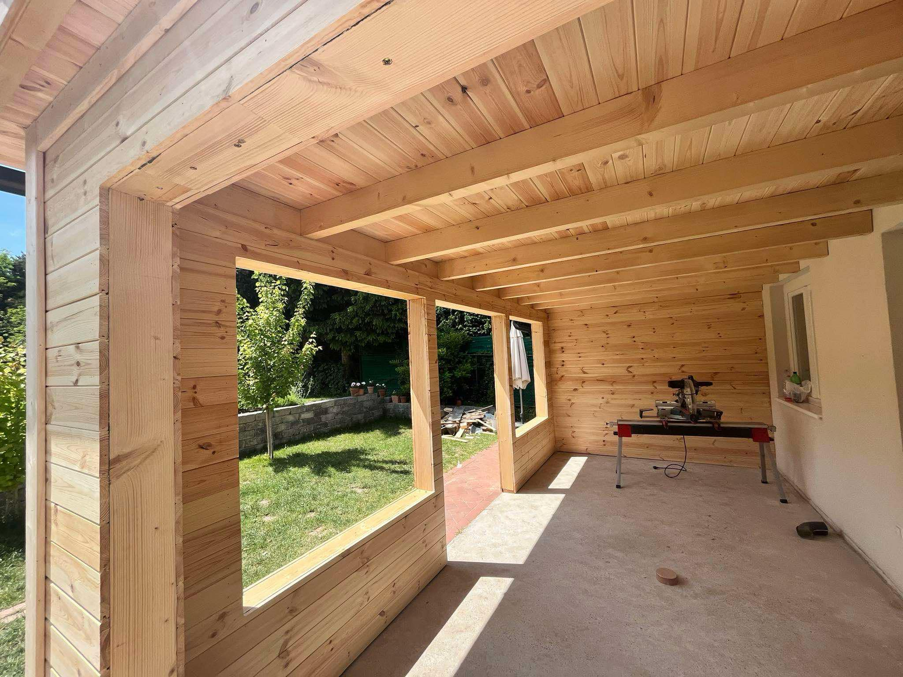
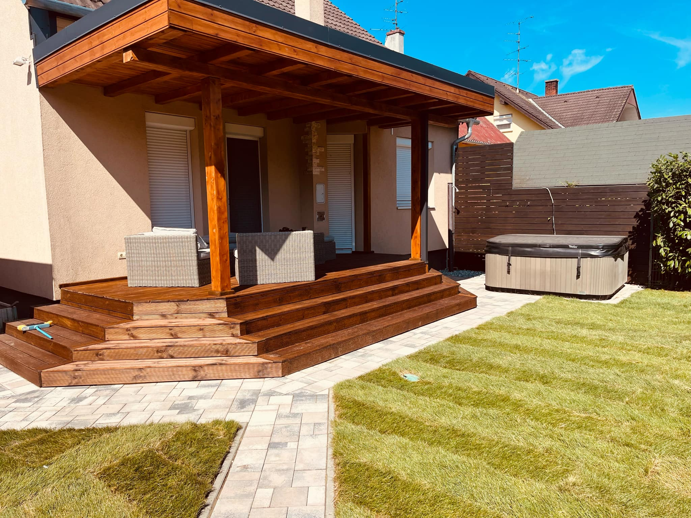
Időtálló, esztétikus faépítmények, amelyek védelmet nyújtanak az időjárás ellen, és harmonikusan illeszkednek otthona stílusához.
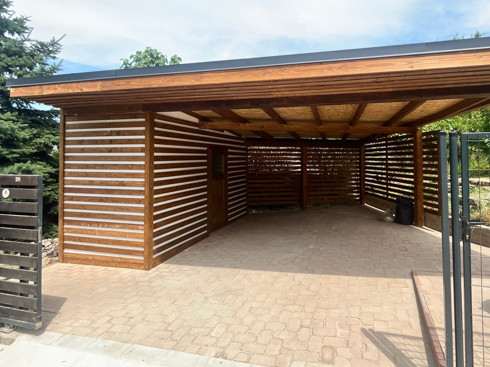
Masszív, stabil szerkezetek autója védelmére, igényes megjelenéssel és hosszú élettartamra tervezve.
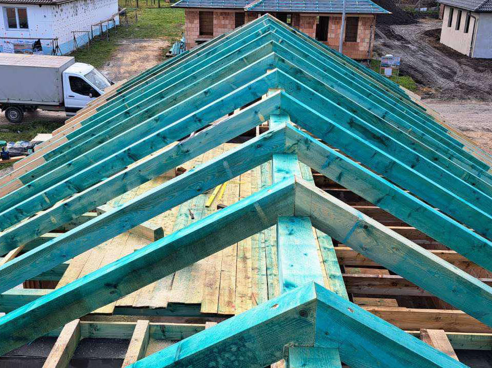
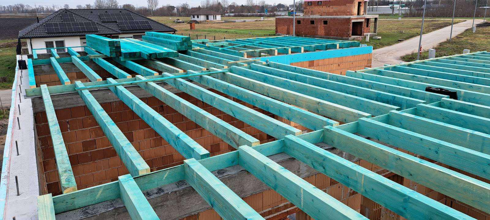
Tetőszerkezet-építés, héjazatcsere és komplett tető kivitelezés szakmai precizitással.
Ereszcsatornák, lefolyók, szegélyezések, hajlatok és minden egyéb bádogos kivitelezés önállóan is, szakszerűen elkészítve.
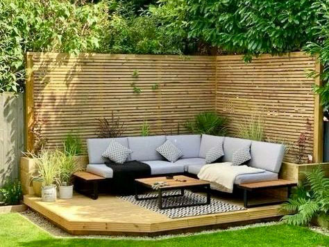
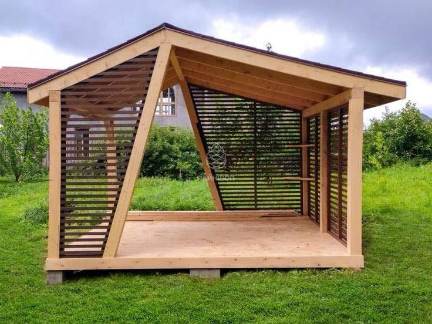
Kerti kiülők, tárolók, szauna és egyéb fa szerkezetek nem sablonból, hanem az igényekhez tervezve és egyedileg méretezve.
Munkáink
Rólunk mondták
"Ki is hozzák a megrendeléstől a maximumot. Ezt a hozzászólást úgy írom, hogy mint megrendelő napról napra figyeltem a munkájukat Nagyon jó csapat! megbízhatóak garantáltan a minőségre törekednek"
- Tóth László
"Nagyon szép munka !!!!"
- Fülöp Csaba
"Ez nagyon szép lett!"
- Sztanszky Zoltán
"Gáborék igazán profik nem csak a munkájukat, hanem a hozzáállásukat tekintve is. Nagyon szépen és gyorsan is dolgoztak és patika rendet hagytak maguk után.
- Boros Ádám
Köszönöm szépen, ezentúl ilyen munkára csak benneteket kereslek!"
"Profi munka volt nalam koszi !!!"
- Farkas Norbert
"Csak ajánlani tudom a csapatot,szakértelem,munkához való pozitív és energikus hozzáállás,időpont utáni pontos és gyors határidőtartás."
- Kiss Gábor
"Nagyon szépen köszönjük a minőségi munkát!
- Székely Attila
Ritkán találni ilyen profi kivitelezőt!☝️
Boldogok vagyunk, hogy rátok találtunk 🤝
Folytatás következik 😉"
"Ritkán látni ilyen ,szép munkát kivitelezéseket, tervek és ötletek szerint is . Igazi Spanyol Madera Pergola stílus
- Barkos Zoltán
👍"
"Csodásak,, kincset érő munkák,,de nem a MAGYAROK,,többségének. Gratulálok."
- Spilkáné Katalin
"Az ár-érték arány kimagasló, a végeredmény minősége felülmúlta az elvárásainkat. A fa anyaga kiváló, gyönyörűen megmunkált és látszik rajta, hogy hosszú távra tervezett, strapabíró megoldás. A kivitelezés hibátlan: precíz, alapos munka, amit határidőre elvégeztek. Köszönjük ezt a csodálatos pergolát, amely nemcsak praktikus, de esztétikailag is tökéletesen illik a kertünkbe!"
- Heinczlich Péter
"Teljesen elégedettek vagyunk a pergolával! Az ár kiváló, minden forintot megért. A kivitelezés hibátlan, látszik, hogy a szakemberek nagy figyelmet fordítottak a részletekre. A felhasznált fa minősége lenyűgöző, masszív, tartós, és gyönyörűen mutat az udvarunkban. Szívből ajánljuk mindenkinek, aki minőségi munkát és korrekt árakat keres!"
- Teleki Rita
"Érdemes volt kivárni Gáborékat, precíz szép munkát csináltak, jó lett a garázs a terasz is. Ajánlom őket !"
- Kovacsics Áron és családja
CNC megmunkálás
CNC megmunkálást vállalunk kapott tervek alapján is, számos anyaggal, mint például:
MDF
HDF
Laminált bútorlap
Forgácslap
Rétegelt lemez
Tömörfa
ABS
Plexi
PVC
PET
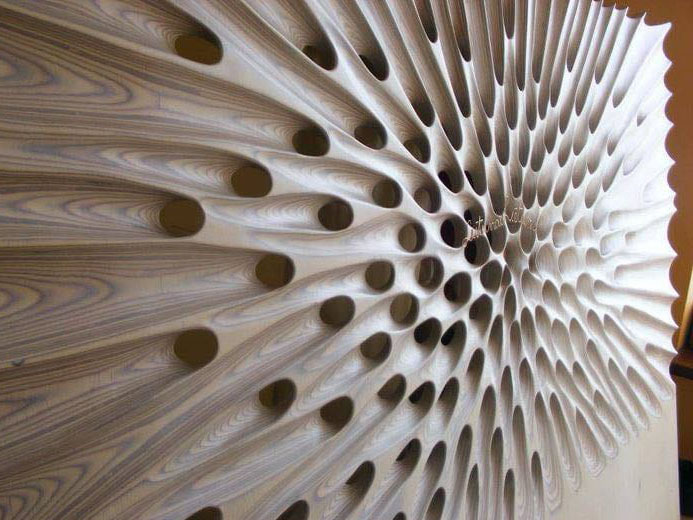
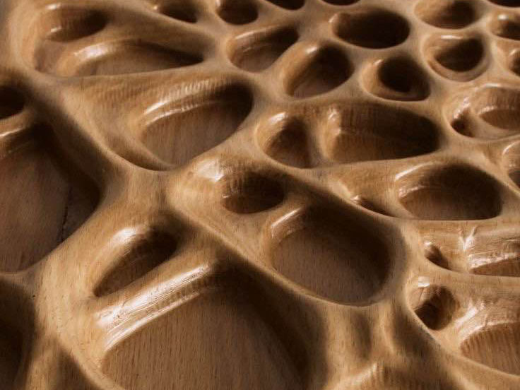
Gyakori kérdések
Az egyedi ácsmunka lehetőséget ad arra, hogy a megvalósítandó projekt tökéletesen illeszkedjen az Ön elképzeléseihez és a környezethez. Legyen szó teraszfedésről, pergoláról vagy egyedi kerti megoldásokról, az egyedi kivitelezés esztétikus megjelenést, funkcionalitást és tartósságot biztosít. Ráadásul, a minőségi ácsmunkák hosszútávú értéket adnak otthonának és kertjének.
Egyedi teraszfedéssel az év minden szakaszában kihasználhatja teraszát. Emellett növeli otthona értékét, miközben védelmet nyújt az eső, hó és erős napsütés ellen, így hosszabb élettartamot biztosít a kültéri bútoroknak is. Az időjárás nem szabhat határt a családi összejöveteleknek. Egyedi teraszfedéssel az év minden szakaszában kihasználhatja teraszát.
Egy praktikus kerti tároló rendszert visz a kerti eszközök tárolásába, és megszépítheti kertjének megjelenését is.
A fedett kocsibeálló megvédi autóját az eső, hó és napfény által okozott károktól, növeli járműve élettartamát.
Egyedi pergolák segítségével környezetét egyedi stílussal gazdagíthatja, és igazi pihenőhelyet alakíthat ki kertjében. A pergola számos stílusban és anyagból készülhet, hogy tökéletesen illeszkedjen kertje hangulatához, legyen az modern, rusztikus vagy klasszikus.
Ne várjon holnapig! Foglalja le időpontját most, hogy garantáltan beleférjen naptárunkba.